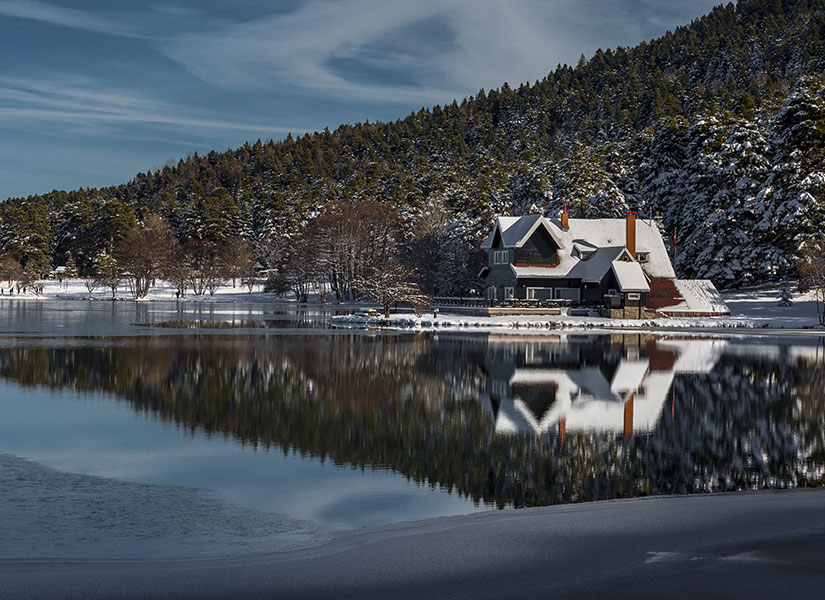
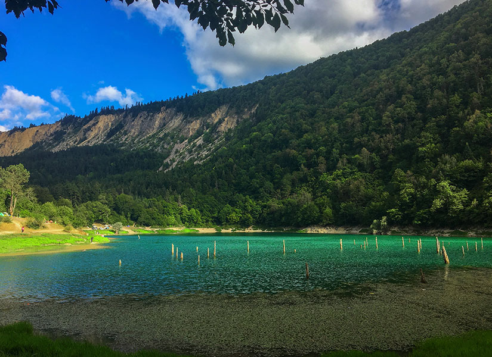
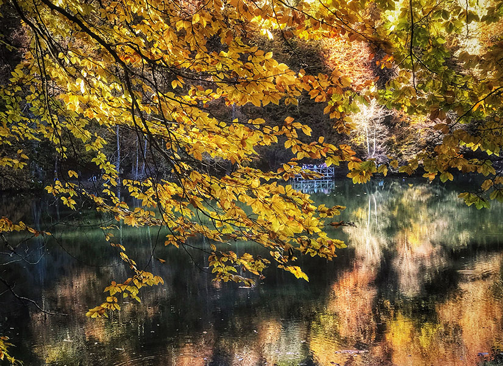

BOLU ABANT GÖLÜ

GÖLCÜK

SÜLÜKLÜ GÖL

Doğa kendisiniz seveni sever derler. Abant Gölü de öyle… Ziyaretçilerine tüm güzelliklerini sunuyor. Burada at binme deneyimi yaşayabilir ya da bisiklet kiralayarak göl çevresinde tur atabilirsiniz. Yöresel ürünler satan köylülerden bir şeyler almayı da düşünebilirsiniz. Abant Tabiat Parkı’nın girişinde, ziyaretçi tanıtım merkezinin olduğu yerde Abant Doğa Müzesi yer alıyor. Buraya kadar gelmişken müzeyi ziyaret etmeyi de ihmal etmeyin. Bir Bolu Evi örneğinin sergilendiği müzede göl çevresinin maketini görebilir ve bölgenin zengin bitki örtüsünü tanımanızı sağlayacak bilgiler edinebilirsiniz.
Bolu’da gezilecek yerler hakkında araştırma yaparken her zaman karşınıza çıkan o göl kıyısındaki yalnız ve huzurlu ev fotoğrafı var ya… İşte o kartpostal tadındaki fotoğrafı tam da burada çekebilirsiniz. Çok güzel bir göl manzarasına sahip olan Gölcük Tabiat Parkı, şehrin karmaşasından uzaklaşarak huzur bulmak ve doğayla iç içe olup dinlenmek isteyenler tarafından sıklıkla ziyaret ediliyor.
Bolu’nun Mudurnu ilçesinde bulunan Tavşansuyu Köyü’nde yer alan Sülüklü Göl’e çeşitli günübirlik turlar ile ya da özel aracınız ile ulaşım sağlayabilirsiniz. Deprem sonucu meydana gelen çöküntü sonucu oluşan göl, muhteşem bir doğayla çevrili… Buraya kadar gelmişken, gölün bulunduğu köyde yer alan şelaleyi de görmeye gidebilirsiniz. Dingin bir atmosfere ve zengin bir doğaya sahip olan gölün çevresinde kamp yapmak isterseniz izin almanız gerekiyor. Ormanlarla çevrili doğal bir alan olduğu için burada kamp yapacakların vahşi hayvanlarla karşılaşma ihtimalini de göz önünde bulundurması iyi olabilir.
Kayın, karaçam ve meşe ormanları arasında yer alan göller ve zengin bitki örtüsü ile Türkiye’nin en güzel doğa manzaralarından birini sunan Yedigöller Milli Parkı, gerçekten büyüleyici bir atmosfere sahip. Bolu’nun doğal güzellikleri arasında da gerçekten öne çıkan ve oldukça popüler olan bu bölgede Büyükgöl, Seringöl, Deringöl, Nazlıgöl, Küçükgöl, İncegöl ve Sazlıgöl yer alıyor..